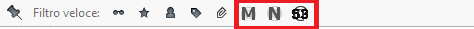
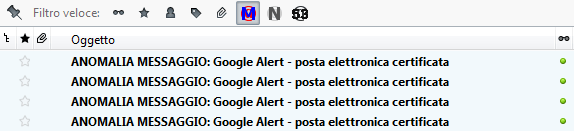
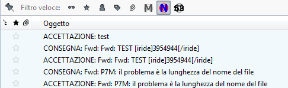
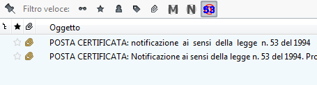

Filtri rapidi
Il
primo impatto con una casella di Posta Elettronica Certificata genera
confusione poiché, all'interno della cartella della posta in arrivo
(inbox), si ritrovano sia i messaggi di posta elettronica certificata
che le notifiche relative ai messaggi inviati (un messaggio di notifica
relativo al messaggio ed un messaggio di notifica per ogni destinatario
certificato).
Per 'mettere ordine' all'interno della inbox, ThunderPEC implementa tre filtri rapidi

- Messaggi: per selezionare i soli messaggi di posta elettronica certificata all'interno dell'elenco dei messaggi ricevuti
- Notifiche: per visualizzare i soli messaggi di notifica
- Notificazione ai sensi della legge n. 53 del 1994
Il funzionamento di questi filtri rapidi aggiuntivi è evidenziato nelle figure seguenti.

In
questo caso, con l'attivazione del filtro relativo ai messaggi,
l'elenco dei messaggi contiene i soli messaggi ricevuti (ANOMALIA
MESSAGGIO e POSTA CERTIFICATA) con esclusione dei messaggi di notifica

Attivando
il filtro rapido relativo alle notifiche, l'elenco dei messaggi
evidenzia le sole notifiche relative ai messaggi inviati (ad esempio,
ACCETTAZIONE o CONSEGNA)

Attivando
il filtro rapido relativo alle notifiche secondo la legge 53 del 1994,
l'elenco dei messaggi evidenzierà i messaggi di tipo POSTA
CERTIFICATA contenenti il testo "Notificazione ai sensi della legge n. 53 del 1994" nell'oggetto